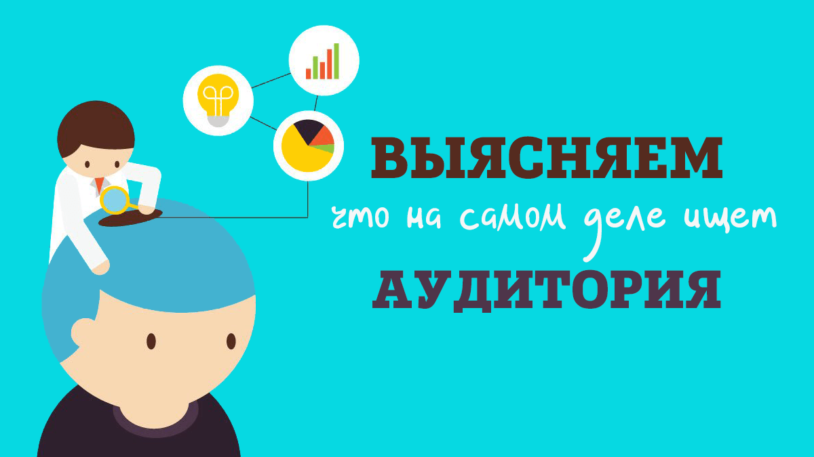

Невозможно получить качественный и высоко ранжируемый поисковиками текст, отталкиваясь только от ключевых слов. Для создания оптимизированного текста во времена Google BERT и Яндекс YATI нужно понимать: какие темы и термины должны быть раскрыты и что ищет аудитория, использующая запрос. Как получить эти данные? – Попробуем разобраться

Классические методы SEO на стадии подготовки ТЗ
Вспомните, как обычно создаётся SEO-контент.
- Оптимизатор идёт в Wordstat и подбирает частотный запрос. Потом, используя сервисы, высчитывает процент вхождений по топу, объём, может быть, даже то, что называет LSI.
- На базе этих данных создаётся ТЗ для копирайтера (30 руб. за 1000 ЗБП). «Копират» идёт на поиск и берет из топа 1-2 статьи на тему. Переписывает, подгоняя под ТЗ.
- Готово, можно публиковать, text.ru, «Тургенев» и Yoast SEO одобряют. А вы потом гадайте, почему статья «не зашла».